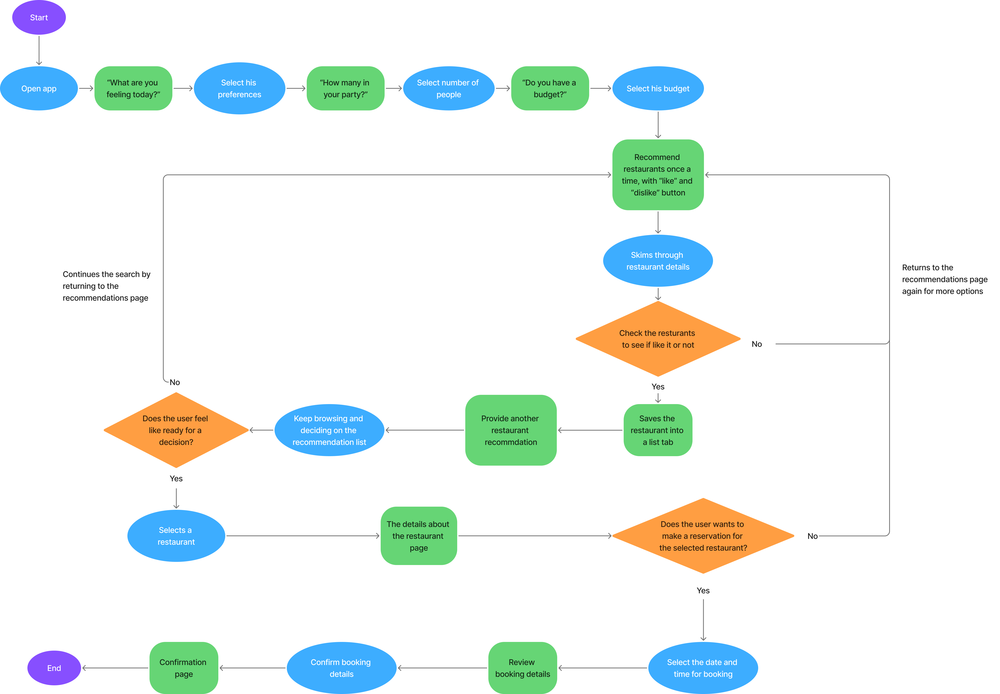
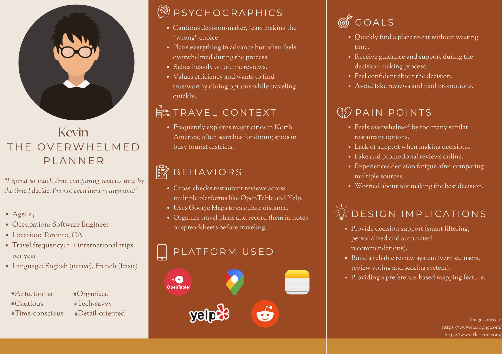
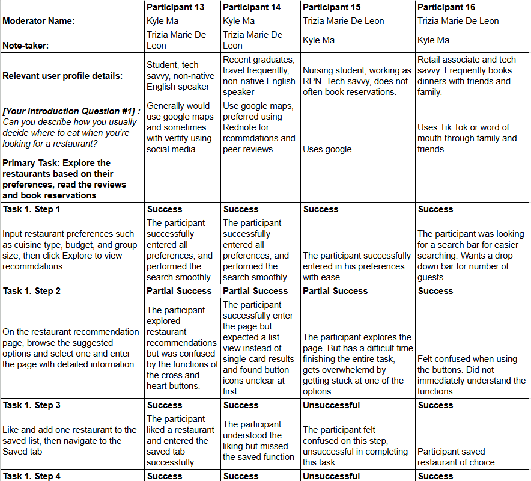
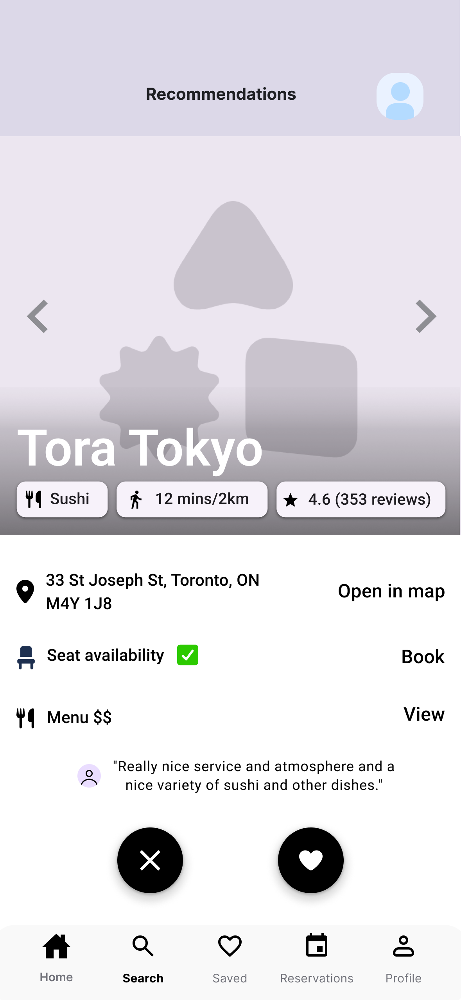
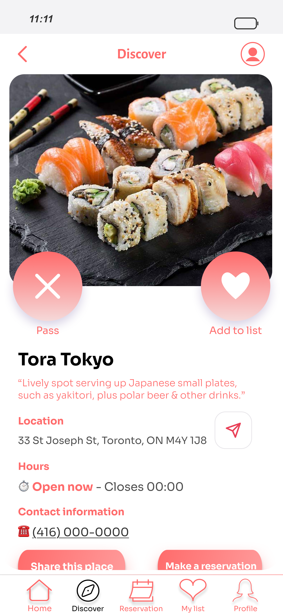
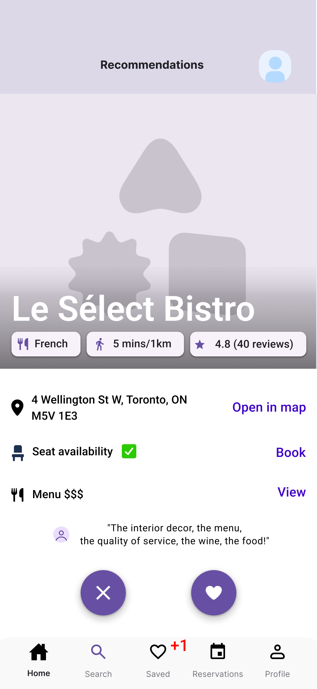
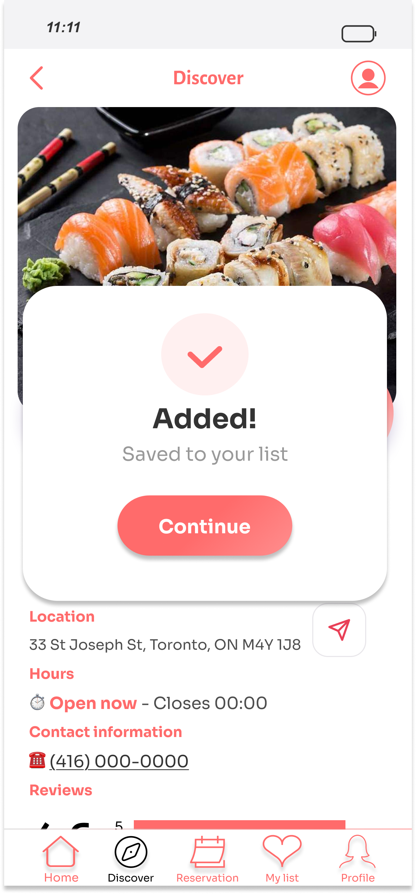
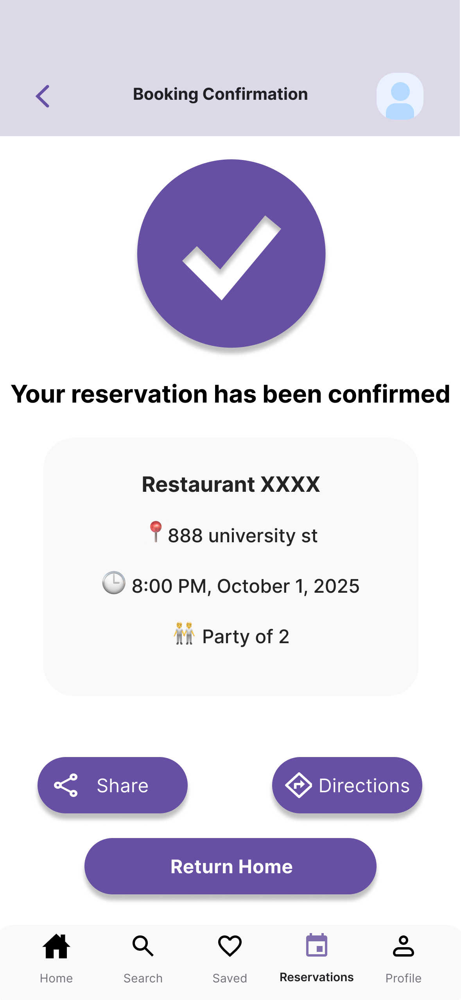
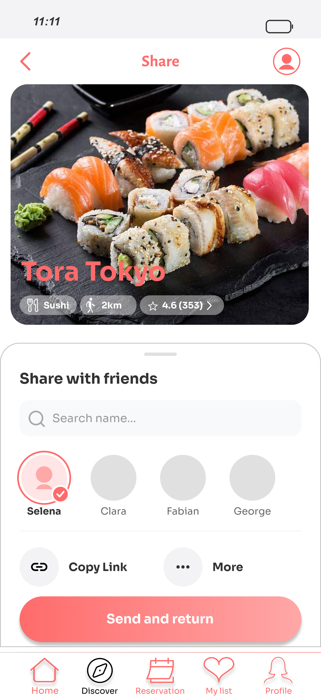

The full arc, at a glance
This is the one project where I owned every stage of the design process. Before walking through it, here's the shape of the whole thing. Each stage fed directly into the next.
The problem, and why I didn't take it on faith
Tourists are overwhelmed when choosing where to eat in an unfamiliar city. That was our starting hunch. But a hunch isn't a brief, so before designing anything, I helped run two research tracks in parallel to find out whether the problem was real and where exactly it lived.
Secondary research came first: a competitive scan of how people actually piece together a dining decision today. Each major tool solves only one slice. Google Maps owns navigation and breadth but its reviews are inconsistent; Yelp leans on reviews but isn't tied to reliable booking; OpenTable nails reservations but only for partner restaurants and offers little discovery; TikTok and Instagram supply vibe and trends but no practical details like hours or availability. Nobody covers discovery, trust, and booking in one trustworthy flow, and that gap is the opening the project aimed at.
Primary research tested that gap against real behavior: eight semi-structured interviews with travellers aged 23–30, run under TCPS 2 ethics with informed consent and anonymized data. I conducted two of the eight myself and helped code all eight together with the team.
What the interviews actually said
Coding the eight transcripts surfaced recurring patterns. Three of them mattered most for design. Each one is a direct pain point, in participants' own words:
I spend so much time comparing reviews that by the time I decide, I'm not even hungry anymore.
Sometimes they use fake reviews to increase the rating. You can't fully rely on them.
Honestly I trust where my friends actually ate way more than a random five-star rating.
Turning research into direction
To bridge research and design, I helped translate the interviews into three artefacts, each one doing a specific job, not produced for show.

I mapped out the core journey to pinpoint the specific points where the experience was falling short. This helped us identify the pain points and challenges users were facing, and allowed us to turn them into value.

The task flow outlines the core design concept: it begins by displaying recommended content item by item, enters a “Like/Dislike” loop, and ultimately branches into “Save,” “Continue Browsing,” or “Book.” Before designing any user interface, the task flow helps us ensure that subsequent designs remain rooted in the original design concept.

The persona keeps the research anchored to a real person. Kevin is the overwhelmed planner, built around the sharpest tension we found: decision fatigue. He over-researches, second-guesses reviews, and needs structure, verified information, and efficiency to feel confident enough to book. Throughout the design, Kevin acts as a constant check that every decision solves a real user problem.
From sketches to a polished prototype
With direction set, I moved into UI. I started on paper with fast, throwaway sketches to test layouts and flow before committing pixels. Each of us sketched independently, then we compared our sketches side by side and combined the strongest ideas into the initial design the team committed to. Sketching first kept that decision cheap, since we were debating layouts rather than defending finished screens.

My sketches explored the preference prompt, recommendation card, detail page, and booking flow. This resolved the structure before any visual design, and gave the team concrete options to compare and merge.
From that agreed direction, I built a mid-fidelity prototype covering the full journey from preference prompt to booking confirmation. This was the version I took into usability testing: complete enough to test the flow, but not yet polished, so feedback could focus on whether the experience actually worked.
Validation: testing the prototype with real users
Our team ran a task-based usability study on the mid-fidelity prototype. Participants worked through a realistic scenario: plan dinner for three, from setting preferences to confirming a booking. I was hands-on for four of these sessions, moderating two and taking notes on two, which let me experience the study from both sides of the table.
Each session combined three lenses on the same moment. A think-aloud protocol surfaced participants' reasoning as they worked. Structured behavioural observation by a teammate recorded what actually happened: whether they completed the step, whether their words revealed a misread of the design, and whether they reported confusion. A short exit interview then captured their reflections afterward. I went back through the session transcripts to analyze patterns across participants and pull out the insights that mattered.

A sample of the notes I took during sessions. Each entry tracks what the participant did, where they hesitated, and what they said out loud, which is the raw material I later coded into the findings below.
| Issue | Severity | Impact on the user |
|---|---|---|
| Not enough to actually decide on | High | The swipe flow was built to fight decision fatigue, but the early screens gave people so little to go on that they still couldn't commit. The fatigue we designed against was still there, just moved one step later. |
| Tapping "Like" gave no feedback | High | After tapping the heart, participants weren't sure anything had happened or where the place went. The missing response quietly reintroduced the very friction the swipe flow was meant to remove. |
| No social signal to lean on | Medium | Several participants said they trust where friends have actually eaten over anonymous ratings, but the app offered no way to see that. Without any social proof, the recommendation felt like it came from nowhere. |
| Saved restaurants were hard to find again | Low | Once a place was liked, participants weren't sure where it had gone or how to return to it, adding a small but repeated moment of doubt to an otherwise quick flow. |
What testing changed
Each finding pointed to a specific fix. Working on my own after the sessions, I took the feedback and refined the UX, then polished the visual design, turning the tested mid-fidelity screens into a final high-fidelity prototype. Below, the three pillars are shown as they evolved, the polished version next to the mid-fidelity one it replaced.
Giving each choice enough to decide on
Our most profound insight was this: even though I had tried to design decision fatigue away, the fatigue still persisted. The swipe flow was meant to fix it by putting one restaurant in front of you at a time and making "yes / no" feel light, and the mechanic itself worked in testing. But the early screens carried so little that people still couldn't actually commit. The fatigue hadn't gone away; it had just moved one step later. So instead of stripping the choice down further, I went the other way and gave each card the decisional factors a real choice needs: hours, location, a rating breakdown, tags, and translation support. Each restaurant now presents enough to judge on its own, so the lightness of the swipe finally pays off in a decision people can stand behind.

Tested version: too little to go on, so users still couldn't commit to a choice.

Final design: hours, location, rating breakdown, tags, and translation, enough to actually decide.
The lesson was clear: solving decision fatigue isn't about showing less, it's about showing the right things to decide with. A clean screen that leaves people guessing only pushes the fatigue downstream.
Confirming the tap actually did something
A small interaction caused outsized confusion. After tapping the heart to "Like" a restaurant, participants weren't sure anything had happened, or where the saved place went. That uncertainty quietly reintroduced the very fatigue the swipe flow was meant to remove. The fix was a lightweight confirmation overlay, an immediate "Added! Saved to your list", so every tap gets a visible, instant response.

Tested version: tapping "Like" gave no feedback, leaving users unsure it registered.

Final design: an immediate confirmation overlay makes every tap feel registered.
I assumed people understood what tapping "Like" did; testing showed they didn't. The smallest missing feedback can undo a feature's whole purpose.
Bringing friends into the decision
A pattern ran through the interviews: people trust where their friends have actually eaten far more than an anonymous five-star rating. The original flow had no way to surface that, so a recommendation could feel like it came from nowhere. To answer it, I added a light social layer on the recommendation and detail screens, showing which friends had saved or been to a place, so a choice carries a familiar signal instead of a faceless score. It reuses trust people already have rather than asking them to build it from raw ratings.

Tested version: only anonymous ratings, with no sign of who the user actually trusts.

Final design: friends who saved or visited a place surface right on the card.
Ratings answer "is this good?"; friends answer "is this good for someone like me?" Borrowing existing trust did more for confidence than any number could.
Impact & what I took away
This is the project where I owned the entire arc, and the value isn't any single screen. It's that every decision can be traced back to evidence. The problem was proven through competitive analysis and eight interviews, translated into a journey map and a task flow, designed from sketches into a tested prototype, and then refined and polished by what real users did in testing. Nothing in the final design is there because I guessed.
The sharpest lesson came from testing contradicting me. I'd assumed one restaurant at a time would relieve decision fatigue for everyone, but watching participants reach for a comparison view showed the model helped some and blocked others. I'd assumed a tapped "Like" was self-evidently understood, and it wasn't. Hearing people reason aloud turned my assumptions into specific, defensible changes.
That's the muscle I'd bring to a product team: I can carry a problem from raw research all the way to a tested, polished interface, and I trust evidence over my own first instinct at every step in between.